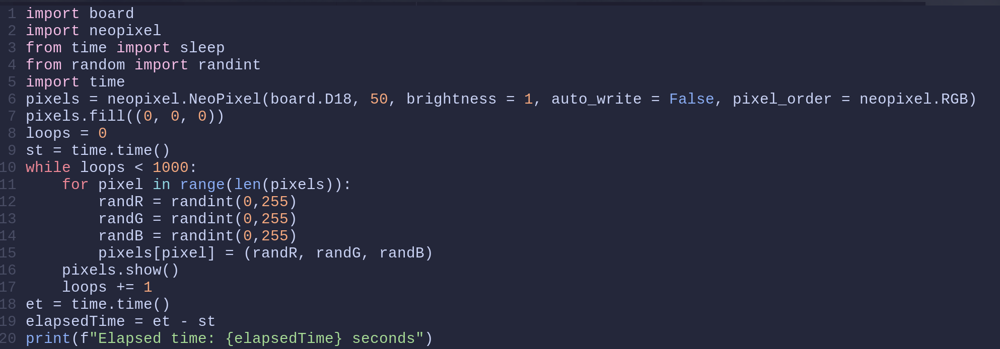
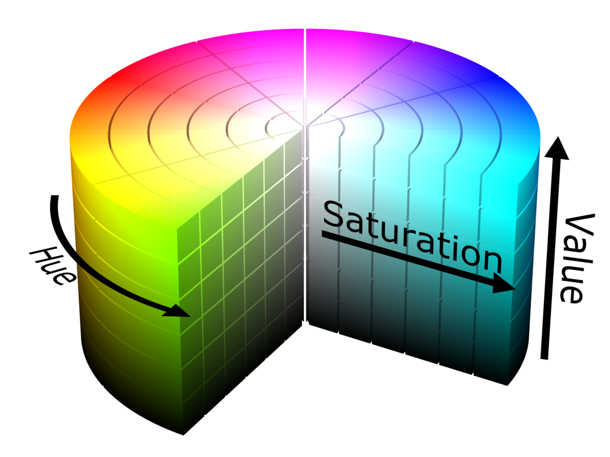

Around December of 2021, I found a video about controlling LEDs
in 3D space for a Christmas tree. It was absolutely fascinating
and I knew immediately that I wanted to do it myself. There was
one small issue though, the video was not technical in the
slightest. It was heavily based around what the general process
was but it was not a guide for how to set up the LEDs, how
program them, or really HOW to do anything. For those
interested, the link to the video is
here.
Being a programming novice who was painfully aware of how new I
was to the field, I left the project for better days.
In the beginning
I Found a Video
The Better Days
One day in July of 2022, the Google algorithm gods looked down
upon me and said "now's as good a time as any" and a video popped
into my YouTube feed. It was pretty unassuming, just a guide on
how to wire some WS2811 LEDs. I watched the video and came to
the realization that I knew how to start!
I also knew the general process for getting the lights to a mapped state, but more importantly: I knew how to write the code.
And so my journey began.
I also knew the general process for getting the lights to a mapped state, but more importantly: I knew how to write the code.
And so my journey began.
The Setup

This is where the images start but there was an intense electrical debugging session that occured before I came close to this point, so that is what I will walk you through.
There had been some lights and a Raspberry Pi 3b hanging around my house for a while so those were the first things I got, following the video I was recommended, I tried to wire the LEDs up. The tutorial, however useful, was not helpful for my set of lights. I got the basic prinicple of how to get the adapters for the lights' wiring on but there was a lot of omitted information about what pins to use on the Raspberry Pi, or which end was negative, or which end took in data and which end outputted data. It took a bit of work, but I got the idea of how to match what pin on the Pi to to what area on the lights. I then came to the realization that the pins I needed were not magically in a row and I would need some jumper cables to carry the current between the lights and the Pi.
Fast forward 2 days and I now have the Pi wired correctly, or so I thought. I had confused the notation GPIO 18, thinking it meant PHYSICAL pin 18, it did not. After getting the wiring correct (I was able to tell by the lights flashing once when I plugged them in).
I wrote some code.
There had been some lights and a Raspberry Pi 3b hanging around my house for a while so those were the first things I got, following the video I was recommended, I tried to wire the LEDs up. The tutorial, however useful, was not helpful for my set of lights. I got the basic prinicple of how to get the adapters for the lights' wiring on but there was a lot of omitted information about what pins to use on the Raspberry Pi, or which end was negative, or which end took in data and which end outputted data. It took a bit of work, but I got the idea of how to match what pin on the Pi to to what area on the lights. I then came to the realization that the pins I needed were not magically in a row and I would need some jumper cables to carry the current between the lights and the Pi.
Fast forward 2 days and I now have the Pi wired correctly, or so I thought. I had confused the notation GPIO 18, thinking it meant PHYSICAL pin 18, it did not. After getting the wiring correct (I was able to tell by the lights flashing once when I plugged them in).
I wrote some code.
I don't have the exact code I wrote to do what is being done in the image above, but after poking around to figure out how the Neopixel library worked, I wrote some very simple stuff. Next to this is the first code I wrote that I have on record.
This is relatively simple compared to what you might have to endure later, and the basic idea is the I am testing the refresh rate of the lights. From this I was able to understand that 50 lights can refresh at 189 hertz. That is faster than most gaming monitors.
I also learned that the main thing that slows the lights updating was the .show() function (foreshadowing). There is also some speed loss when using random number generation like I did here, but it is only a couple of seconds and since all my later tests are on the same scale, it can be disregarded.
This is relatively simple compared to what you might have to endure later, and the basic idea is the I am testing the refresh rate of the lights. From this I was able to understand that 50 lights can refresh at 189 hertz. That is faster than most gaming monitors.
I also learned that the main thing that slows the lights updating was the .show() function (foreshadowing). There is also some speed loss when using random number generation like I did here, but it is only a couple of seconds and since all my later tests are on the same scale, it can be disregarded.

At this point it is important to note how the code is being executed. All of the code I had written was executing on the Raspberry Pi. This is because the only way to control the lights is through the PWM pins on the Pi.
Because all the code is being executed on the Pi, all of the calculations necessary to run the program are also being done on the Pi, and the Pi is significantly slower than my, or anybody's, laptop or computer. This becomes a problem later.
Also included in my verion control is some prototypical code for capturing images of the lights, this code is iterated on frequently and is extremely important as the project progresses.
Another piece of ineffiency to mention is the fact that all the lights that I wish to turn on are being sent, through SSH, as arguments on the command line. Think for a second, if I had 300 lights. That's some 1000 characters required to turn the lights on. This would be remedied quickly.
Also included in my verion control is some prototypical code for capturing images of the lights, this code is iterated on frequently and is extremely important as the project progresses.
Another piece of ineffiency to mention is the fact that all the lights that I wish to turn on are being sent, through SSH, as arguments on the command line. Think for a second, if I had 300 lights. That's some 1000 characters required to turn the lights on. This would be remedied quickly.
Here is a bit of code I wrote to create a "center out" pattern. Using the center coordinate, I find every light's distance from the center and I sort a final list by that distance. Iterating through
each light in the list and showing it is how the pattern is created.
This is the foundation for the Closest function, a function that is used in almost every pattern i have created and if there was a single spot that I would target for computation time improvements, this function would be it.
This is the foundation for the Closest function, a function that is used in almost every pattern i have created and if there was a single spot that I would target for computation time improvements, this function would be it.
Expansions
After a couple of small optimizations, like including the light coordinates
as a supplemental text file and being able to execute a certain program from a centralized exec file,
I moved on to tackle rotation.
The goal here was to create some really nice mathematical patterns using rotation. Rotation is a little tough, or at least it is when you don't know what you are doing. It just so happens that in the process of finding an effective method to represent rotation, I derived the 2 dimensional rotation matrix. That looks something like this:
The goal here was to create some really nice mathematical patterns using rotation. Rotation is a little tough, or at least it is when you don't know what you are doing. It just so happens that in the process of finding an effective method to represent rotation, I derived the 2 dimensional rotation matrix. That looks something like this:
Where X and Y are input coordinates and X' and Y' are output coordinates.
Below is the output of the simple test I created to check if my math was correct (I did not know whether my math was correct or not because I had not thought to Google "rotation matrix").

And voilà! It worked! This was using an 18 degree rotation. This will be useful later.
So, at this point I had 100 lights set up in a horribly precarious situation, I had a method for mapping and describing the geometric relation between the lights,
and I had some cool patterns. Really all I did in the following weeks was add more lights and create new patterns. Following will be images and videos related to the light setup and the patterns I have created. Please be advised that almost all of the videos so far were taken with my laptop camera that gets terribly overexposed and is only 1280x720. The effect can be beneficial for seeing the macro of the light patterns.

And here we will take a pause. It is worth noting that, as of now, I have 30 recordings of various quality, I only wished to put the highlights in though.
I wanted to stop here to talk about two things, the magic of HSV, and the hardships of rotation.
I'll start with the big issue I had with rotation as it ties in with the spiral you see.
I'll start with the big issue I had with rotation as it ties in with the spiral you see.
One piece of code I had written involved finding what angle about a circle a point lay on. In order to find that, with the x and y coordinates I had, I needed to use arctan.
Using the ratio of opposite over adjacent, I would be able to find the radian measure of a point about my origin. This works because where tangent takes in an angle value and will return a ratio between two lengths (though what the lengths are is not explicit), the inverse function of tangent (arctangent) takes in a ratio of side lengths and returns an angle measure. The range of these return values is between π/2 and -π/2 and so using some basic if statements I was able to determine which quadrant of the circle the point lay in and I would add π/2 if it was in the second or third. Arctan is shown below.
)
The issue with this is that the ratio of opposite over adjacent could return undefined. In the situation where the adjacent side, or the x value, is 0, you would have an undefined output. And it just so happens that in my real lighting setup, with my camera of 921,600 pixels, I had a light sitting EXACTLY on the y axis (an x value of 0). This was extremely difficult to debug as the error only occured on the 8th rotation (144 degrees) and it was on light 270. This is truly fascinating as the likelihood of a light being on the y-axis at any rotation is 720/921,600 or 0.078%. Not to mention that my decimal precision was set to 8, so the value of the adjacent side was less than 0.00000000.
Using the ratio of opposite over adjacent, I would be able to find the radian measure of a point about my origin. This works because where tangent takes in an angle value and will return a ratio between two lengths (though what the lengths are is not explicit), the inverse function of tangent (arctangent) takes in a ratio of side lengths and returns an angle measure. The range of these return values is between π/2 and -π/2 and so using some basic if statements I was able to determine which quadrant of the circle the point lay in and I would add π/2 if it was in the second or third. Arctan is shown below.
The issue with this is that the ratio of opposite over adjacent could return undefined. In the situation where the adjacent side, or the x value, is 0, you would have an undefined output. And it just so happens that in my real lighting setup, with my camera of 921,600 pixels, I had a light sitting EXACTLY on the y axis (an x value of 0). This was extremely difficult to debug as the error only occured on the 8th rotation (144 degrees) and it was on light 270. This is truly fascinating as the likelihood of a light being on the y-axis at any rotation is 720/921,600 or 0.078%. Not to mention that my decimal precision was set to 8, so the value of the adjacent side was less than 0.00000000.

The whole point of dealing with rotation at all was at the challenge of a friend. After showing them all the things I could do mathematically with the lights, they said I should create a spiral.
A spiral came across as pretty daunting but it is actually quite simple.

That's it. Using a different constant in front of theta would allow for a bigger or smaller spiral and that is all I needed.
With this, I would calculate a certain number of points, say 50, that would fit perfectly into a spiral shape. I would then use that code written earlier to figure out which lights were closest to each point and I would light them. Once one spiral was illuminated, I would rotate all of the points using the matrix math above and I would get a new spiral.
This feels to me like a dramatic oversimplification, but it really isn't. The principle is quite simple, the execution is another problem.
That's it. Using a different constant in front of theta would allow for a bigger or smaller spiral and that is all I needed.
With this, I would calculate a certain number of points, say 50, that would fit perfectly into a spiral shape. I would then use that code written earlier to figure out which lights were closest to each point and I would light them. Once one spiral was illuminated, I would rotate all of the points using the matrix math above and I would get a new spiral.
This feels to me like a dramatic oversimplification, but it really isn't. The principle is quite simple, the execution is another problem.
My methods for transferring the data regarding the lights that needed to be lit at this point had been precarious. The first way I did it was by computing all the lights that needed to be on, in
order, and then I sent those lights as arguments to the file execution in the command line where they were interpreted on the other side. Bad idea. The main issue with this is that you could only really send one pattern at a time without
writing some complex way to parse the light numbers on the raspberry pi side. There is also some character limit in the shell I use that is somewhere around 5000.
After realizing I wanted to do this in a more efficient way. I decided to write an execution program that would send a certain file to the raspberry pi, compute all of the lights and their coordinates there, and then light them up. This worked ok. However, as I mentioned before, doing the calculations on the raspberry pi is limited and if you are doing something like, say, calculating all of the points on a spiral of a certain size and doing a bunch of trig to find the closest lights, you would have a long pause between animated frames.
The last, and current, method of data transfer comes in the form of precomputation on my computer. Effectively, I do everything I need to, calculation-wise, on my laptop and then I export a "lightOrder.txt" file that contains a list of lists of lights that would need to be turned on at any given time. I then have a second piece of code that parses the lightOrder however I want. For example, I could write that I wanted to sleep the program for 1 second between frames; I would write a sleep function into the parser each time it reads a list of lights. This removes a lot of strain from the raspberry pi and is just a more stable and structured way of actually lighting the lights.
After realizing I wanted to do this in a more efficient way. I decided to write an execution program that would send a certain file to the raspberry pi, compute all of the lights and their coordinates there, and then light them up. This worked ok. However, as I mentioned before, doing the calculations on the raspberry pi is limited and if you are doing something like, say, calculating all of the points on a spiral of a certain size and doing a bunch of trig to find the closest lights, you would have a long pause between animated frames.
The last, and current, method of data transfer comes in the form of precomputation on my computer. Effectively, I do everything I need to, calculation-wise, on my laptop and then I export a "lightOrder.txt" file that contains a list of lists of lights that would need to be turned on at any given time. I then have a second piece of code that parses the lightOrder however I want. For example, I could write that I wanted to sleep the program for 1 second between frames; I would write a sleep function into the parser each time it reads a list of lights. This removes a lot of strain from the raspberry pi and is just a more stable and structured way of actually lighting the lights.
When I first made the spiral code, I was calculating each frame on the raspberry pi. Given that it had to do at least 15,000 trig calculations (50 points, 300 lights to check distance), the frames came out really slowly. This was what pushed me to
change the way I sent the data to precalculation with the lightOrder file. However, I wanted it to be faster. The first thing to do here would be to use complex numbers rather than matrix multiplication. Complex numbers are actually so commonly used
to represent rotation that the creators of Python made them a built-in function of the language. The way complex numbers work for rotations best visualized with a picture.
A complex number is denoted by Z = Ai + B. i is the square root of -1. In our normal number system, no number can be squared and equal -1, it just doesn't work. Thinking of the complex plane as a number line that is perpendicular to our normal number line means that multiplying any number by i will rotate it 90 degrees. If 5 is our starting point, multiplying by i give 5i. Multiplying by i again give 5i*i and since i is the square root of -1, multiplying i by itself gives -1, and multiplying -1 by 5 give -5. So multiplying by i is equivalent to a 90 degree rotation, but what about a more general formula? Well, this is it:
(x&space;+&space;iy))
This for θ being the angle by which you would like to rotation a point. This is only applicable for counterclockwise rotation. This code is faster than the matrix multiplication counterpart as it doesn't need to import another library and it only requires 2 trig functions.
Another way to speed this up is by creating a lookup table for rotational values. For example, if I am rotation by 18 degrees, I could create a lookup table for all the trig functions I would need to perform. Given that there are only 20 distinct angles, this is very feasible.
The last method of optimization came from a friend who realized that by changing the spiral's starting point angle, all subsequent angles would be rotated already as the spiral is built off of the last point's position. That code runs way faster and I have added a video of what it looks like.
A complex number is denoted by Z = Ai + B. i is the square root of -1. In our normal number system, no number can be squared and equal -1, it just doesn't work. Thinking of the complex plane as a number line that is perpendicular to our normal number line means that multiplying any number by i will rotate it 90 degrees. If 5 is our starting point, multiplying by i give 5i. Multiplying by i again give 5i*i and since i is the square root of -1, multiplying i by itself gives -1, and multiplying -1 by 5 give -5. So multiplying by i is equivalent to a 90 degree rotation, but what about a more general formula? Well, this is it:
This for θ being the angle by which you would like to rotation a point. This is only applicable for counterclockwise rotation. This code is faster than the matrix multiplication counterpart as it doesn't need to import another library and it only requires 2 trig functions.
Another way to speed this up is by creating a lookup table for rotational values. For example, if I am rotation by 18 degrees, I could create a lookup table for all the trig functions I would need to perform. Given that there are only 20 distinct angles, this is very feasible.
The last method of optimization came from a friend who realized that by changing the spiral's starting point angle, all subsequent angles would be rotated already as the spiral is built off of the last point's position. That code runs way faster and I have added a video of what it looks like.
Now, on to the second point I mentioned earlier, this will be more brief. HSV is a color standard, like RGB, but rather than taking
3, 8-bit values to represent different amounts of red, green, and blue, HSV takes a Hue, a Saturation, and a Value. HSV was actually created in the first place
for purposed related to computer graphics. My main use of it was as a way to iterate through the traditional rainbow.
The traditional rainbow has 7 values, red, orange, yellow, green, blue, inigo, and violet. With RGB, I was unable to find a way to programmatically iterate through certain values of red, green, or blue so as to allow myself to create a rainbow. HSV, on the other hand, has the ability to do this quite easily as the hue value (as in the number, not the V in HSV) is measured in degrees. This would take far too long to explain so I will just add a picture.
The traditional rainbow has 7 values, red, orange, yellow, green, blue, inigo, and violet. With RGB, I was unable to find a way to programmatically iterate through certain values of red, green, or blue so as to allow myself to create a rainbow. HSV, on the other hand, has the ability to do this quite easily as the hue value (as in the number, not the V in HSV) is measured in degrees. This would take far too long to explain so I will just add a picture.

Now, I did not use this very much simply because I didn't need to make a rainbow or use any other method of iterating
through hues that much, but it was a cool revelation that it was possible to create a rainbow so easily just by changing the angle around the cylinder.
I did create a rainbow with this concept so I will add that.
So, after creating the spiral and its animated counterpart, I decided to take on a new challenge. Up until this point, I had stayed pretty much in the
known territory of what you can do with lights like this. Mathematical patterns have been delved deeper into by many other people and there is a whole follow-up video to the
video I linked in the introduction that is a livestream that tests a bunch of user submitted code. All of this to say that this was a pretty saturated industry.
What I wanted to do was turn the lights into a display. A dumbed-down version of what you are using right now. I had no idea what the code would look like and I only
found a few instances of people doing this online.
There were several problems I needed to tackle to get pixeling to work correctly, least of which was the material the lights were on.
However, despite the fact that I only implemented a solution to this after getting some prototype code working, I think that it would be good to start with this.
Taking photos of the LEDs is unpredictable at the best of times. The lights could be facing the wrong way, you could be taking all of your photos on a reflective white background
(hint hint), or you could have some random object that your lens picks up as perfect white for some reason. Gaussian blur can only take me so far and the smallest error can
cost me a whole 10 minutes of my life. For this reason, I decided to make a black background for the lights.
I also wanted to create a more crystalline structure for the lights that would grant more consitency on lighting density. For this reason, I took the highly
in-depth and precise route of stapling the lights to a board that was painted black.

The first picture is the board drying, the second is lights when they were just flung and slightly organised on the board (as well as mapped)
and the last picture is of the crystlline lights structure functioning as a laser pointer. The stapling took a while to do and taught
me that the electronics were pretty resilient (I stapled straight through the wire 3 times) and were pretty unlikely to malfunction even when an
unexpected piece of metal was added to the circuit (staple).
I figured out pretty quickly when trying to organise the lights that it was not going to be as easy as I had hoped. I wanted all of the power connectors to be on the same end of the board so that the cable management was easier but this created a lot of difficulty. The lengths of the strings of lights were just not the right length to go the length of the board an interger number of times. For fun (using a program that I will talk about later) I have created visualiser for the way that the lights are lain out. There are switchbacks as well as crosses in a couple places but all in all, I think I acheived a pretty decent density across the board (pun absolutely intended).
I figured out pretty quickly when trying to organise the lights that it was not going to be as easy as I had hoped. I wanted all of the power connectors to be on the same end of the board so that the cable management was easier but this created a lot of difficulty. The lengths of the strings of lights were just not the right length to go the length of the board an interger number of times. For fun (using a program that I will talk about later) I have created visualiser for the way that the lights are lain out. There are switchbacks as well as crosses in a couple places but all in all, I think I acheived a pretty decent density across the board (pun absolutely intended).
So with the bit about the board out of the way, I can talk about pixeling. To make something into a display, the first
step is to carve out your pixels. With this setup, it might seem logical to use a single light for each pixel, and you would be correct. There is a lack
of detail in certain areas on higher resolution images due to the resolution of my board being around 5√6 (12 ish) by 10√6 (24 ish) but at this point,
the board's functionality is not as a perfect monitor.
The general pixeling process is such: the image is translated into pixel-by-pixel color values and the lights are sort of "overlayed" onto the image. The lights find out what color they are supposed to hold based on the pixel they are sitting on and all of that gets shipped off to a final array of lights and their corresponding colors. If you are playing an animation, the process repeats with each sub array that is full of lights and corresponding colors being added to a massive array that represents the whole animation.
The code was somewhat difficult to work out but in the end, it ended up being one of the shortest programs I had written for this project. And most importantly, it works well! Within a certain critera. The lights themselves are not good at displaying brown and they do not have the greatest color accuracy in general. Here are pieces of pixel art I made being displayed on the lights.
The general pixeling process is such: the image is translated into pixel-by-pixel color values and the lights are sort of "overlayed" onto the image. The lights find out what color they are supposed to hold based on the pixel they are sitting on and all of that gets shipped off to a final array of lights and their corresponding colors. If you are playing an animation, the process repeats with each sub array that is full of lights and corresponding colors being added to a massive array that represents the whole animation.
The code was somewhat difficult to work out but in the end, it ended up being one of the shortest programs I had written for this project. And most importantly, it works well! Within a certain critera. The lights themselves are not good at displaying brown and they do not have the greatest color accuracy in general. Here are pieces of pixel art I made being displayed on the lights.


As you can see from the images, when you have some large blocky input images
(flags), you can achieve a very recognisable look. In contrast to this, images with a fair amount
of intricate detail as well as specific levels of empty space (the Eye of Sauron) will leave something to be desired.
There is also a fair amount of stretching on the Eye as the image is in a 1x1 ratio and my code is severly flawed. My code
creates the pixels themselves with ratioed dimensions. This means that all of the "pixels" that I have artifically created
would have dimensions of 1x2. Displays for monitors typically keep all of their pixels in the same aspect ratio as that makes
sense, I did not do that because I wasn't thinking very far ahead.
All in all though, for what this actually is (a really long string of lights), gaining this level of abstraction to 2D is pretty cool and a sumnation of a whole lot of time and effort.
This is not the conclusion, this is just the endpoint of the major expansions.
All in all though, for what this actually is (a really long string of lights), gaining this level of abstraction to 2D is pretty cool and a sumnation of a whole lot of time and effort.
This is not the conclusion, this is just the endpoint of the major expansions.
The last real part of the lighting for this project (for now) comes in the form of an optimization. At this point, it was really slow
to get data all the way to the end of the strip of lights (picture to explain). Now, PWM is really fast, but it doesn't really get to shine
when there are microcontrollers that have to stop the data, process it, and pass it on again at every light. They takes AGES (microseconds) to get anything
done, so it seems natural to try to bypass them. My thought was simple, why not use two different data lines to pass information and section the lights
into even parts, that way I can simultaneously pass data into 150-light sections, HALVING the time it takes for the lights to get their information.
Sadly, in the code itself, you have to check whether a light is of a certain index, and that alone is enough to account for the time saved. However, there are more than just speed improvements to be had here. The lights use a combination of power from an external power supply with the 5 volts supplied from the raspberry pi's GPIO pins, by separating the lights into two sections, I effectively double the amount of power I can put into the lights, leading them to be brighter and to flicker less. Also, it means that I can use fewer raspberry pis to control more lights (half as many to be exact).
But the sugarplum fairly land of theory must come to an end.
Sadly, in the code itself, you have to check whether a light is of a certain index, and that alone is enough to account for the time saved. However, there are more than just speed improvements to be had here. The lights use a combination of power from an external power supply with the 5 volts supplied from the raspberry pi's GPIO pins, by separating the lights into two sections, I effectively double the amount of power I can put into the lights, leading them to be brighter and to flicker less. Also, it means that I can use fewer raspberry pis to control more lights (half as many to be exact).
But the sugarplum fairly land of theory must come to an end.
Here is the issue. When I created the code to split the output into two data lines, something strange happened. Basically, I had the code
to show all of the updated lights on line one run before showing the updated lights on line two (the code runs fast enough that there is
not a noticable delay), but the two outputs overrode the other line. This would cause, say, the bottom 150 lights to update both halves and the
top 150 lights would update both halves as well. It turns out that while the raspberry pi has multiple (5+) dataouts (GPIO pins) that the lights can interpret,
there are only two LINES of output. Basically, GPIO 18 will get the same signal as, say, GPIO 22, but GPIO 23 will have a different signal as GPIO 18.
A diagram would be best.
As you can see, there are two different lines that cover multiple output pins (the holes) and they produce individual outputs. Moving the wire vertically would not change the output thought it would change the pin number, moving horizontally would change the output and the pin number. So, you can only get 2 different outputs on the different lines, great, let's use some different pins and ... it still didn't work.
As you can see, there are two different lines that cover multiple output pins (the holes) and they produce individual outputs. Moving the wire vertically would not change the output thought it would change the pin number, moving horizontally would change the output and the pin number. So, you can only get 2 different outputs on the different lines, great, let's use some different pins and ... it still didn't work.

At this point, it had been a few days (about 5) and I decided to turn to the library that all of this code is written on. The library itself is really just
a massive compilation of C code as C was probably the best language to write code that deals with PWM in. C is illegible, at least for me, as someone who
had, up to this point, dealt exculsively in highly abstracted high-level languages. For this, I had to employ my father. After some small lessons as well as
a doomscroll through the code, we found several hints to the existence of multi-line functionality.
After a couple days, while having a look at the issue, my father tried a simple package reinstall. And that was it. We tested the lights again and the lights were being properly separated into their individual lines. I have added a video with me goofing around with the separate data lines.
At first, they run normally with two lines, then I take out the line for the bottom half to see them pause. Then I plug the 5 volt power line into the dataline. The voltage waveform is not as managed as it is for PWM and so the data being sent is just about as random as you can get. Since the microcontrollers on each LED only know 24 bit color values, they take a truly random value. I then plug them back in normally and look at the result.
After a couple days, while having a look at the issue, my father tried a simple package reinstall. And that was it. We tested the lights again and the lights were being properly separated into their individual lines. I have added a video with me goofing around with the separate data lines.
At first, they run normally with two lines, then I take out the line for the bottom half to see them pause. Then I plug the 5 volt power line into the dataline. The voltage waveform is not as managed as it is for PWM and so the data being sent is just about as random as you can get. Since the microcontrollers on each LED only know 24 bit color values, they take a truly random value. I then plug them back in normally and look at the result.
The very last thing (again, for now) that I would like to talk about is my lightPlot program. A side effect of processing
multi-megabyte images into color values is that the output file is quite large, even when repeats are removed. For this reason, it could become
costly if I sent a buggy piece of code or a pattern with no end to the lights. The way that the data is stored before being sent out the wire into
the lights is using a piece of memory called DMA, or Direct Media Access buffer. The data that is ready to be exported into the wire is queued in
the DMA buffer until the buffer recieves a "go" command, at that point all of the data is dumped into the wire. The "go" command, in this case, would
be the show() function that is used in my code.
But say I forgot to end a loop. Or more specifically, the loop ends at some extraordinary number of loops. Well, all the data from every loop before gets simultaneously dumped from the DMA buffer. That is a massive problem and if you do it incorrectly enough, the buffer lights won't turn on for several minutes and it certainly won't be what you are expecting.
For this reason, I thought it a resonable investement of time to create a testing platform for the lights. Using JavaScript and HTML Canvas, I would create a program that could take an array input of the exact same format as the output in my Python code, and it would display the lights virtually. This took a while to do, but I knew the result would be worth it. I learned a lot about JavasScript and if this word is a link, it means I have created a page to talk about it. In the end, I got exactly what I wanted, a low risk test environment for any pattern I wanted to create. You can see one example further back in the page when I demonstrate the path of the lights when they are stapled to the board, but here is another.
But say I forgot to end a loop. Or more specifically, the loop ends at some extraordinary number of loops. Well, all the data from every loop before gets simultaneously dumped from the DMA buffer. That is a massive problem and if you do it incorrectly enough, the buffer lights won't turn on for several minutes and it certainly won't be what you are expecting.
For this reason, I thought it a resonable investement of time to create a testing platform for the lights. Using JavaScript and HTML Canvas, I would create a program that could take an array input of the exact same format as the output in my Python code, and it would display the lights virtually. This took a while to do, but I knew the result would be worth it. I learned a lot about JavasScript and if this word is a link, it means I have created a page to talk about it. In the end, I got exactly what I wanted, a low risk test environment for any pattern I wanted to create. You can see one example further back in the page when I demonstrate the path of the lights when they are stapled to the board, but here is another.
And that is the end. Here are some pictures of functions graphed on the lights that didn't really have a spot
earlier.

It really bothers me that this is empty so I put some stuff here.